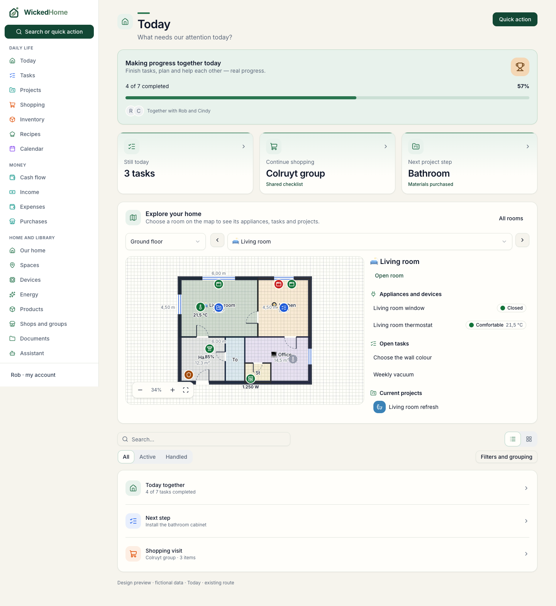
WickedHome · design review
How WickedHome should feel
Explore everyday journeys and image-led views in a consistent household app. These wireframes use the actual shared components, with clearer relationships, colourful cues and useful progress.
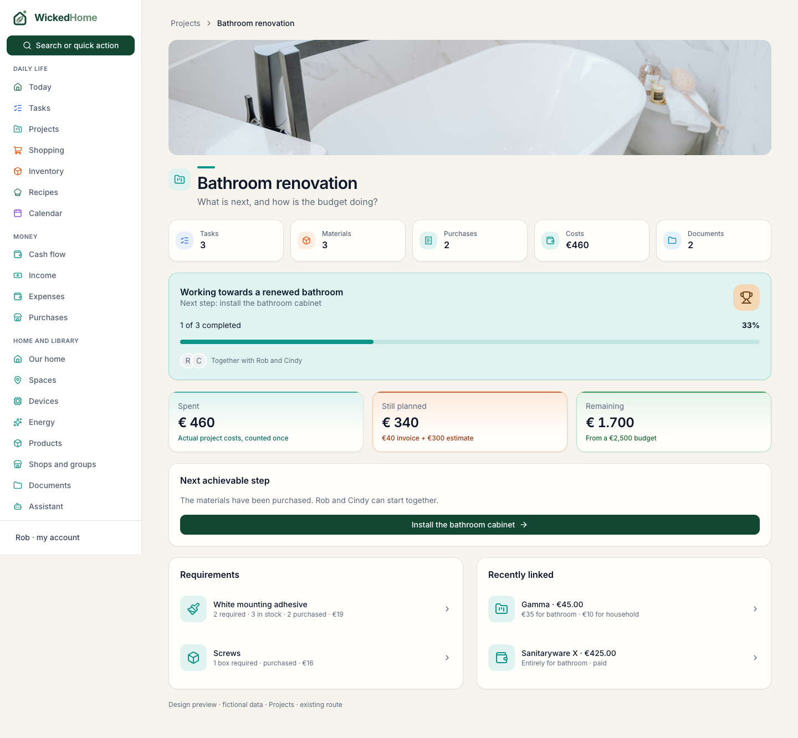
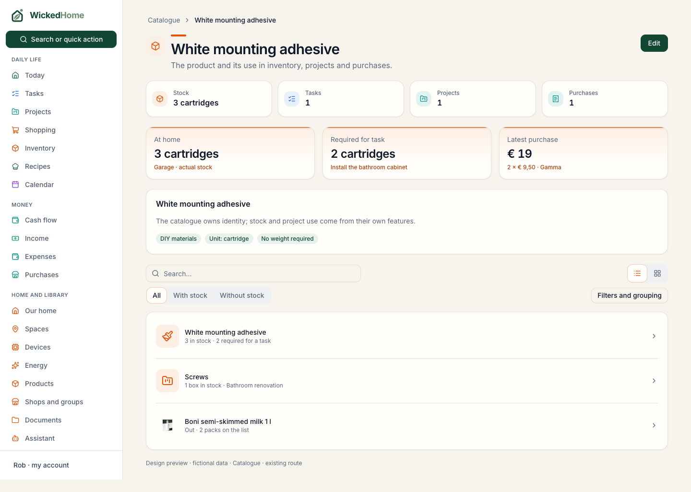
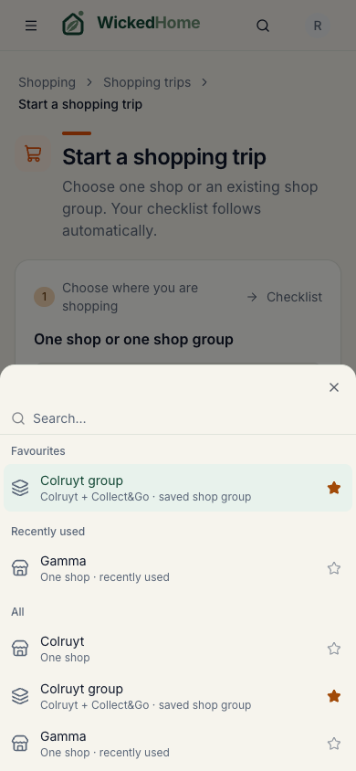
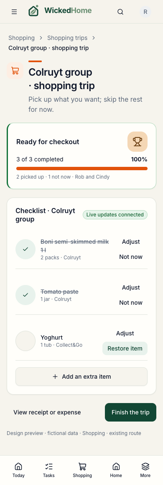
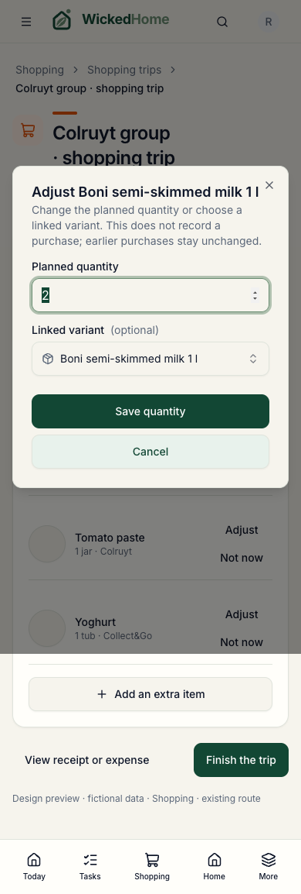
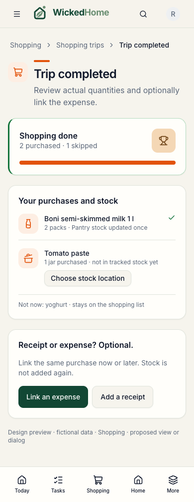
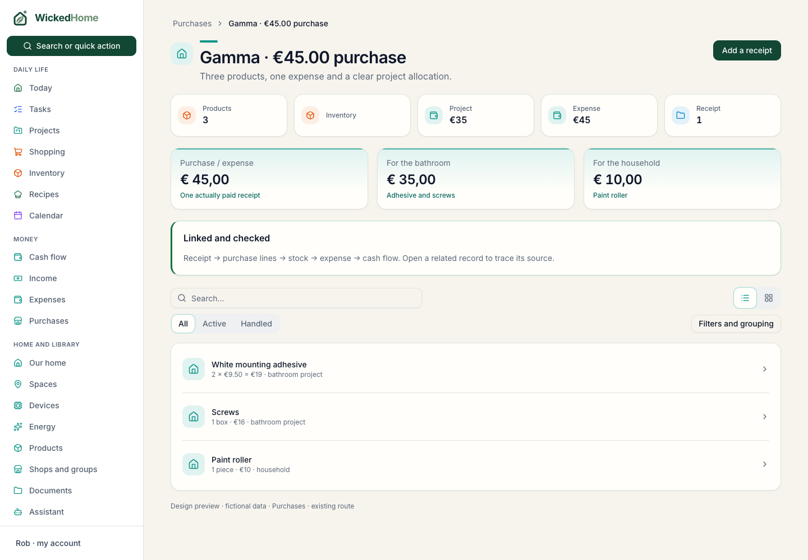
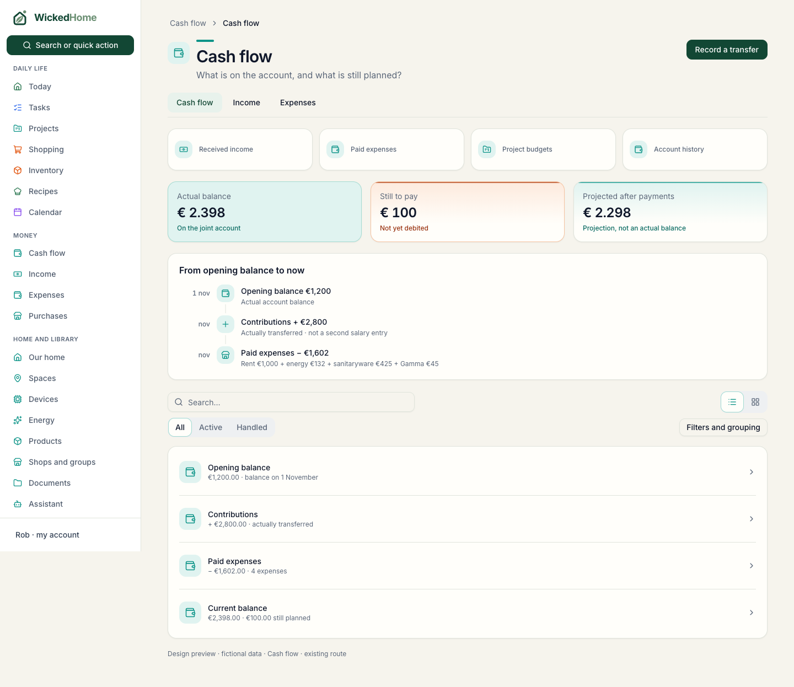
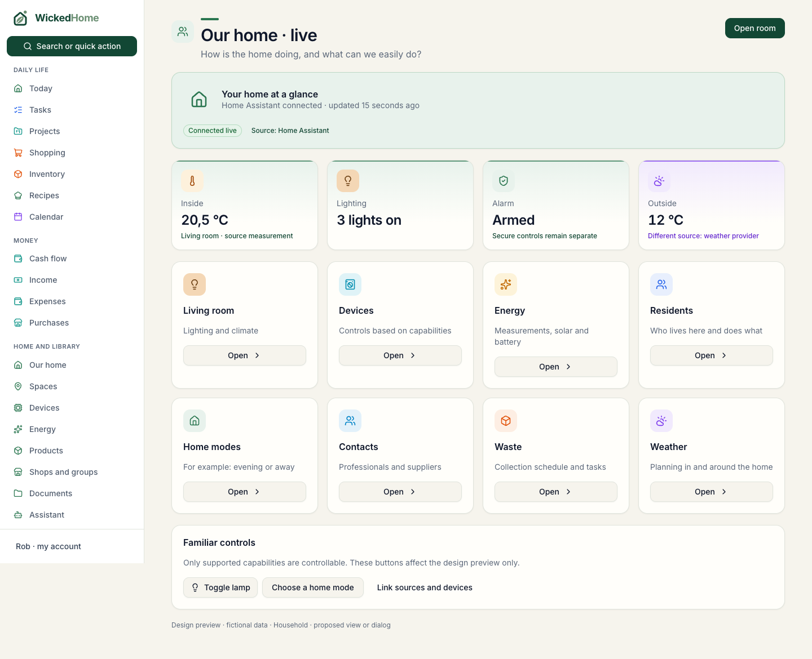
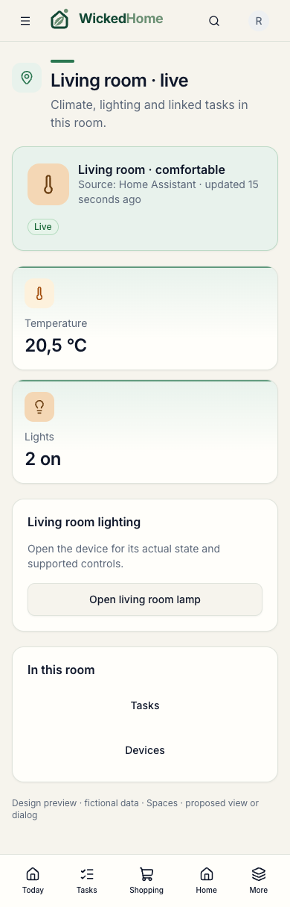
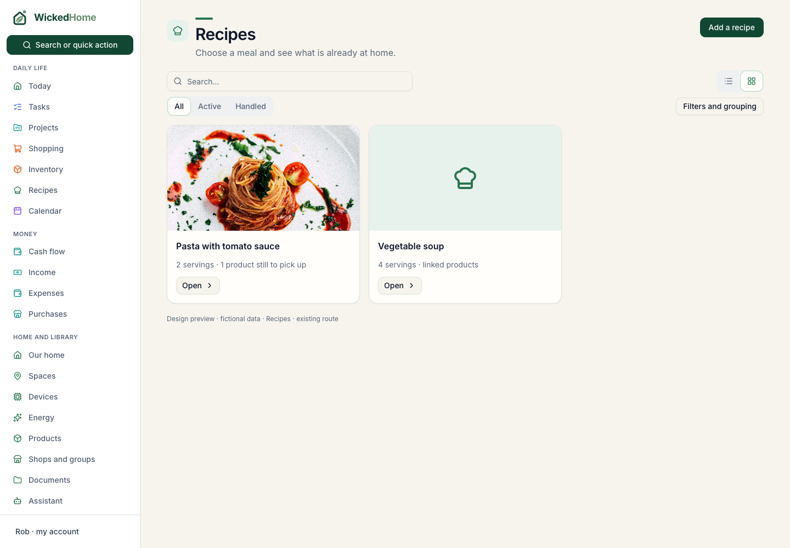
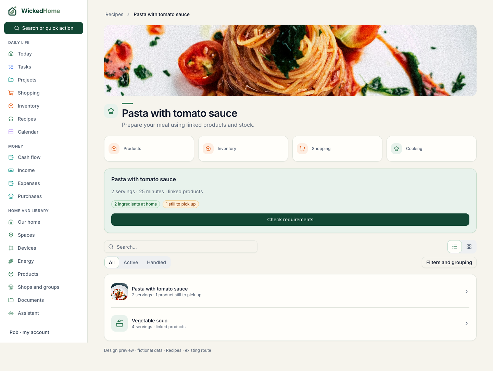
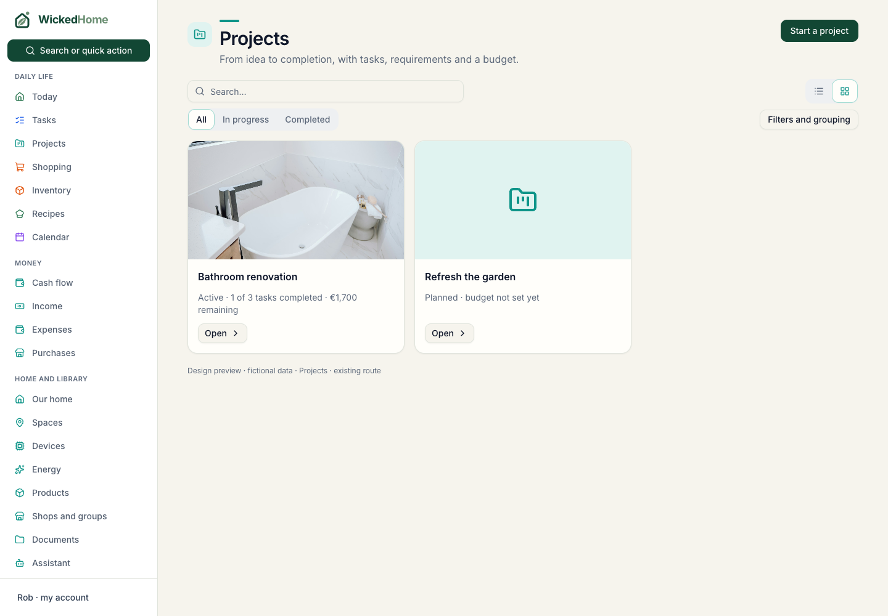
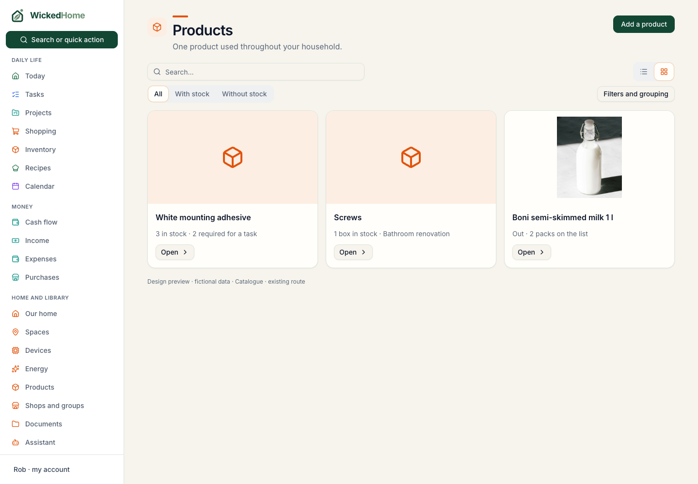
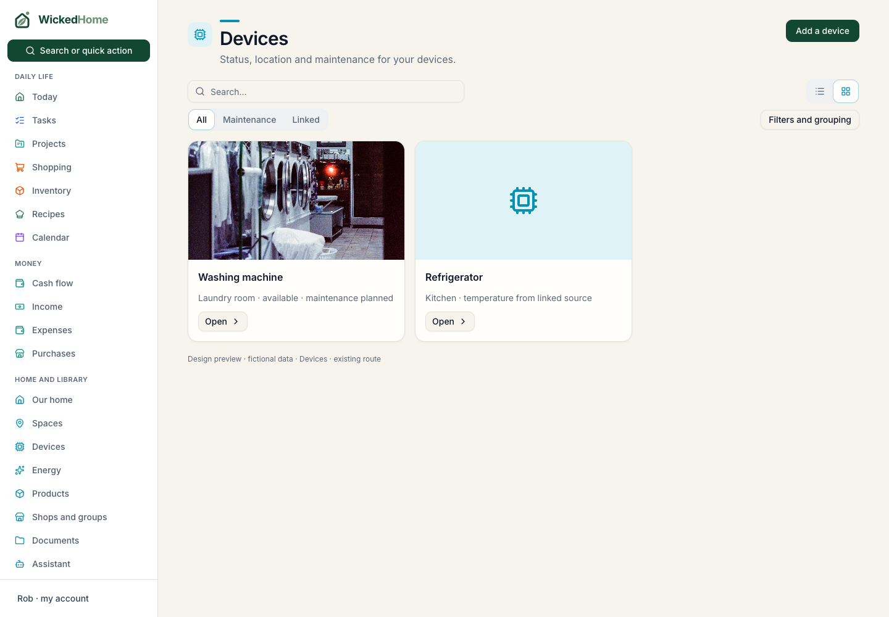